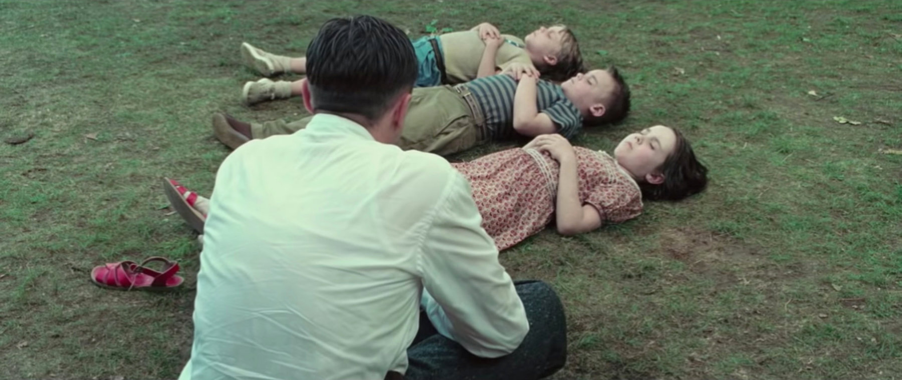
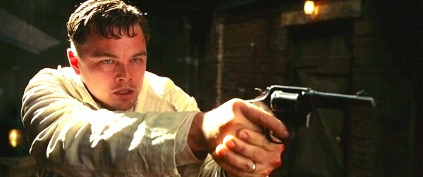

In Rachel's room, Teddy and Chuck discover a code that Teddy breaks. He tells Chuck that he believes the code points to a 67th patient, when records show only 66. Teddy also reveals that he wants to avenge the death of his wife Dolores, who was murdered two years prior by a man called Andrew Laeddis, whom he believes is an inmate in Ashecliffe Hospital. The novel is interspersed with graphic descriptions of World War II and Dachau, which Teddy helped to liberate. After Hurricane Carol hits the island, Teddy and Chuck investigate Ward C, where Teddy believes government experiments with psychotropic drugs are being conducted. While separated from Chuck for a short while in Ward C, Teddy meets a patient called George Noyce, who tells him that everything is an elaborate game designed for him, and that Chuck is not to be trusted.
As Teddy and Chuck return to the main hospital area, they are separated. Teddy discovers a woman (in a sea cave he tried to take refuge in) who says she is the real Rachel Solando. She tells him she was actually a psychiatrist at Ashecliffe, and when she discovered the illegal experiments being run by them, she was incarcerated as a patient. She escaped and has been hiding in different places on the island. She warns him about the other residents of the island, telling him to take care with the food, medication and cigarettes, which have been laced with psychotropic drugs. When Teddy returns to the hospital, he cannot find Chuck and is told he had no partner. He escapes and tries to rescue Chuck at the lighthouse, where he believes the experiments take place. He reaches the top of the lighthouse and finds only hospital administrator Dr. Cawley seated at a desk. Cawley tells Teddy that he himself is in fact Andrew Laeddis (an anagram of Edward Daniels) and that he has been a patient at Shutter Island for two years for murdering his wife, Dolores Chanal (an anagram of Rachel Solando), after she murdered their three children.Andrew/Teddy refuses to believe this and takes extreme measures to disprove it, grabbing what he thinks is his gun and tries to shoot Dr. Cawley; but the weapon is a toy water pistol. Chuck then enters, revealing that he is actually Andrew's psychiatrist, Dr. Lester Sheehan. He is told that Dr. Cawley and Chuck/Sheehan have devised this treatment to allow him to live out his elaborate fantasy, in order to confront the truth, or else undergo a radical lobotomy treatment. Teddy/Andrew accepts that he killed his wife and his service as a US Marshal was a long time ago. The ending of the novel has Teddy receive a lobotomy in order to avoid living with the knowledge that his wife murdered their children and he is her murderer.